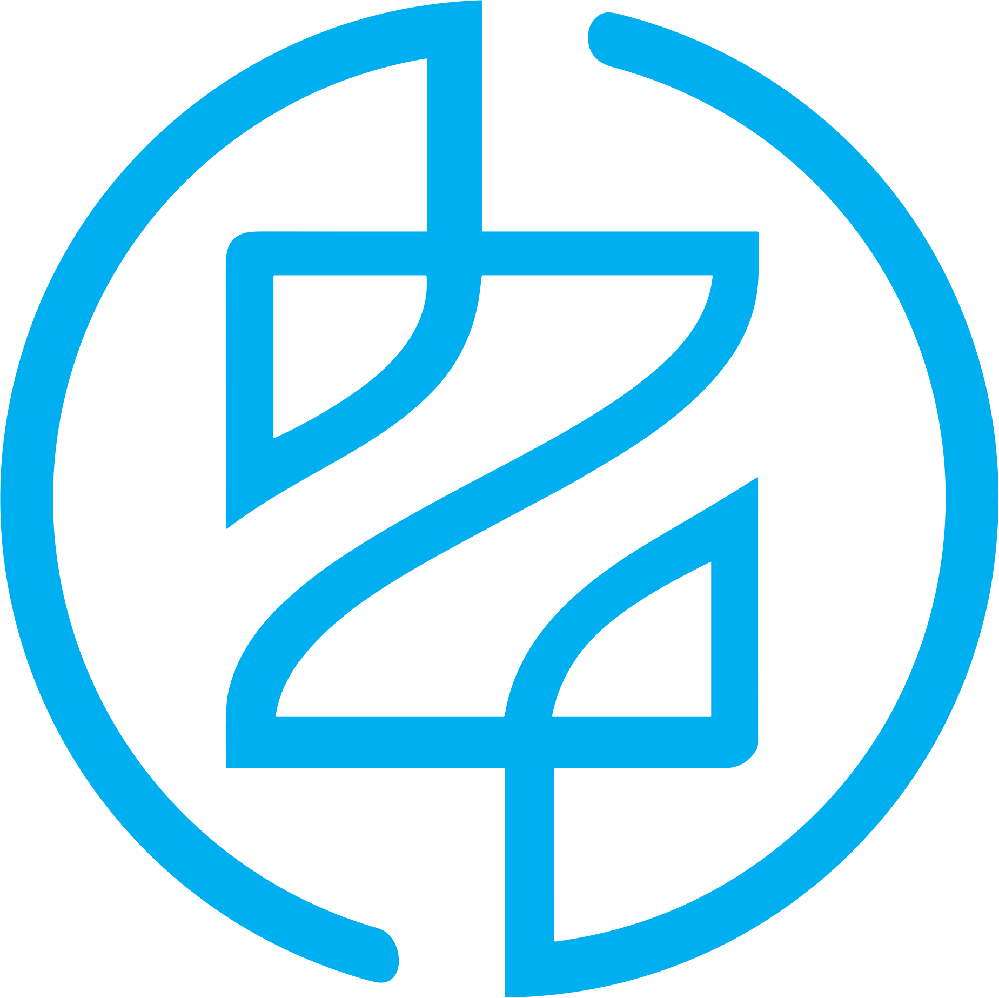

Intelligence Business Ecosystem
Ruang kerja bersama yang menghubungkan kebutuhan pasar, informasi, dan mitra bisnis.

Zamzameena Ainsa Synergy


Sorotan ZAS · Jakarta
PT Zamzameena Ainsa Synergy membangun ekosistem bisnis digital yang menghubungkan pasar, data, dan mitra dalam satu sistem.
Kenali ZASSekilas ZAS
Kami membantu bisnis bergerak dengan alur yang lebih terhubung. Pasar, informasi, dan orang-orang yang menjalankan bisnis bekerja dalam satu ekosistem.
Dengan cara kerja yang ringan dan terukur, bisnis dapat memahami kebutuhan pelanggan serta bertumbuh dengan lebih terarah.
Baca tentang kamiApa yang kami bangun
Ruang kerja bersama yang menghubungkan kebutuhan pasar, informasi, dan mitra bisnis.
Informasi penting dirapikan agar mudah dibaca dan membantu tim mengambil langkah berikutnya.
Nilai dari setiap kegiatan digunakan kembali untuk memperkuat bisnis dan jaringan mitra.
Cara pandang
| Aspek | Bisnis konvensional | Model ZAS |
|---|---|---|
| Fokus | Berjalan sendiri-sendiri | Pasar, data, dan mitra terhubung |
| Keputusan | Banyak mengandalkan perkiraan | Berangkat dari data yang terkumpul |
| Aset | Membutuhkan banyak aset tetap | Ringan dan memakai sumber daya bersama |
| Penyaluran | Jalur distribusi terbatas | Jaringan mitra yang terus berkembang |
Mari terhubung